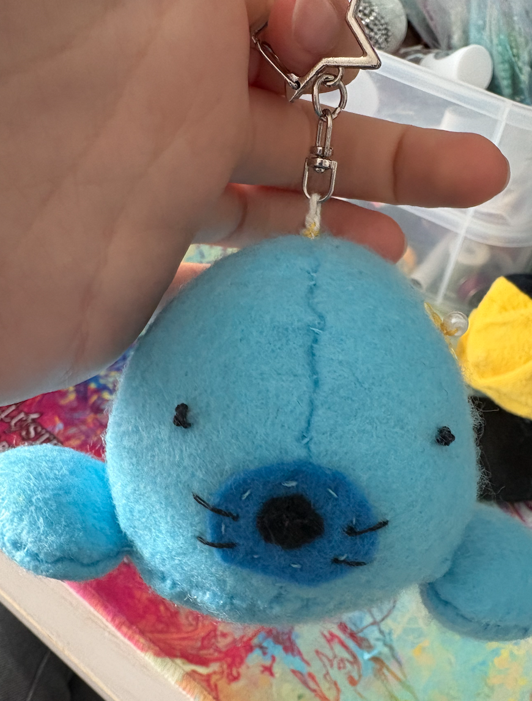

Crafts ૮ • ﻌ - ა ‧͙⁺˚*･༓☾
About me
Commentary sect
Crafts sect
Extra entries
June 3rd, 2025
A battle jacket is in the works! I’ve wanted to make one for years and during this period I have built up a moderately impressive patch collection. When I went up to Boston I finally found my denim jacket victim in an odd, mostly 80’s focused, thrift shop. It was also really cheap which many thrift shops have forgotten they’re supposed to be. The jacket was from a JCPenney brand but I just removed all the labels from it, in hopes that I can eventually add my own tag to it. I have a lot of ideas for it and started laying out my bought patches but I’ll probably make some of my own soon too. I’ve begun laying out the patches as you can see in the lovely image. I’ll explain some of them while I’m at it.
When I was Upstate I found three boyscout patches from the 70’s, all very prettily embroidered and meant to be sewn on rather than ironed on. I feel like ironed on patches are new but I really have no idea how new and don’t plan on exploring the interwebs for that information. I also have a few patches from parks I’ve been to. The max patch was from the start of the Appalachian trail, when I was staying in Harpers Ferry, West Virginia. There were stories of people who completed the trail on the wall of that office and everyone who went to take on the trail had their photo taken. One of the stories stood out to me but now I don’t remember a lot of the smaller details. It was a war veteran who was blind and took the trail with his dog, letting his dog lead him the whole way through a mountain range. He supposedly didn’t have shoes for a lot of the walk and was very in need of literally every resource but he never turned back on the trail because it gave him peace from his thoughts from the war. I cannot imagine going blindly through mountains, both physically and knowledge wise, in a way that I’d feel at peace. He was out there for months, that’s crazy you can get to the point that you feel that way. It’s also moderately scary. I went to Sante Fe with my family a few years back and upon visiting a national park there I acquired a patch of their state fish from the park’s store. Sante Fe was an interesting trip but I’m simply not built for climates like that because I have a hard time remembering to drink water when I’m thirsty which is such a random issue too. I passed out for a few seconds due to this whilst with a tour guide which was moderately awkward. Otherwise, the art scene there was very fun and unique so I would recommend it. My most recent patch is probably the Cabrillo National Monument one. I got it this winter when I travelled with my family to San Diego. We visited that park and trekked around the whole area a number of times. The parks there have a lot more monuments then I feel like the New York ones do. The ones I've been to Upstate are all just lush forest and extremely cold places to swim. The Statue of Liberty patch is by far the least exciting trip to get but the actual patch is interesting. I thought I took a photo of when it was from but supposedly I didn’t (I can’t find it, cue crying sequence) so just know that it is actually ancient. I got it while I was in Greenpoint with my family because I would not choose to venture into the Brooklyn crowd on my own accord. And finally, my Catskill Fire Tower patch is from the Catskills but I really have no clue what location I acquired it from up there. Anyways, for the rest of my jacket plans I’d like to add spikey shoulders, replace the jean buttons, and create and add Punk band references and political statements on patches. I shall continue this work and have it be updated here once any of these plans are finished!
Crafts I've done Involving Recycling
May 22, 2025
Just a tiny update on the bird keychain I made for a friend: it is in fact in use! Here’s a photo I recently got of her upon my friend showing her again to me in Spanish class
It’s really lovely to see her in use on his keys still. The little guy is still as robust as ever and everything is intact which gives me a strange sense of pride as I didn’t absolutely mess up the construction of this bird. Also, are plushie birds so androgynous that they beat the confines of gender roles and can have any pronoun used on them? I feel odd about using ‘her’ and ‘little guy’ a sentence away from each other. Anyways, I should probably get a name for the bird like my other projects so that that isn’t as weird. Thank you for reading this gibberish to whoever is viewing this!
May 22, 2025
Berta has been hooked to a keychain! I realized I haven’t been using her a lot because there aren’t a lot of situations in which bringing around a sock monkey makes sense and so I knew I had to repurpose her so that she could be more intertwined with my daily life. I got a bag of keychains for some other projects so I added one onto her and she has never been so stylish! Through this I’ve been able to get a lot of use out of her!
Along with this, I have some lore to add about how Berta acquired her name. I have enjoyed the YouTuber Filmcow for a long time and in middle school I would proudly and possibly a little too regularly exclaim that my favorite movie was his project “Detective Heart of America: The Final Freedom”. I still think it’s a masterpiece but I’ve come to enjoy trashy early 2000’s comedies more so its spot as my favorite movie has been stolen. In the movie there is, forgive me if I am mistaken, a German Aerospace engineer named Sabina. Last year I met someone from Germany my age via the world wide web and something about German names became funny to me. I have since learned that the name Sabina is actually of Italian origin but I was, at the time of Berta’s conception, determined to have a sock monkey with a German name. This continues to delight my German friend and as I learn German with said friend I am continuously delighted thinking about how Berta would speak if she wasn’t inanimate. This is mostly due to the fact that German sounds very funny. I suppose that goes to show the level of joy friendship and shared learning can bring you.
May 20, 2025
Recently I made another gift for a friend, this time under strange circumstances. I’ll write more on that in the extra entries section. Via scrolling Pinterest for felt plushie keychain ideas I found a seal pattern that I’ll add here
Moderately random side note but I think it is good to keep in mind that it isn’t bad to get heavily inspired every now and then. I find myself unconsciously trying to gatekeep random things I like or judging the authenticity of other peoples mediocre attempts of recreating what I find to be purely joyful experiences but it really isn’t bad to do. Everyone, no matter any of their characteristics, is increasing in skill levels and figuring themselves out and so it makes no sense to judge or stunt this learning behavior. Back on track, it was a decently easy sewing pattern that was also easy to tweak. It also allowed me, with the use of some creativity, to use some of my leftover materials. This project also birthed another new specimen with a sophisticated name: Bertha, not to be mistaken with my sock monkey Berta. This was also my first project that I am yet to share on here (there’s a few others in the works that I may share about soon! How incredibly exciting!) that is made of felt. I’ve had a pile of felt for awhile because I had a moment of weakness in which I believed Turkish pillow fabric wasn’t exactly desirable for little crafts. Upon this impulsive buy (so bad, I know) I realized I had to put it to use and so the circumstance that came about for me to have to make this was almost a blessing in disguise. To make up for my ill decision to give in to the corporate abiding demons that tricked me into my impulsive and actually very well priced purchase of felt, I used a mixture of thread scraps, fabric scraps, and polyfill to fill up my dearly beloved Bertha.

Her body was mostly made up of polyfill and thread to make her more squishy but I stuffed her paws with fabric scraps to make them more stiff. Due to this I have still recycled scraps but have also still allowed for my dearest Bertha to be squishy as she deserves to be. Also, another side note, I completed her in two nights which I'm decently proud of too (Or maybe that just goes to show that I was in fact correct about saying this was a very easy project!). Bertha has even been accessorized. Now I actually want to make her a tutu and might make my next keychain project clothed, who knows! I’m so wild! Jokes aside, I did actually give Bertha an accessory. Just like my last keychain project for a friend, I gave her something reminiscent of a flower with the use of sequins and a bead. And here, with lovely lighting, she is completed! She’s definitely a fun buddy that you can help to bring into existence! Who knows, maybe one day I can cultivate an army of them.
April 3, 2025
I had my SAT today and I believe I did quite well. If I’m proud enough I might share my score later this month here. I believe it went well though, I easily answered most of the questions. I had worried so much in the past week that the concept of that happening hadn’t crossed my mind so I’m happy that I was at least comfortable throughout my test taking time. After the test I hung out with some friends and walked around my school area for quite a bit. We got a slushie from a nearby convenience store, ate an absurd amount of this dark chocolate toblerone, and came back into the school to eat and joke together. This got me thinking: what a pleasure it is that I get to surround myself with people that I can mutually enjoy the presence of. Being able to find situations to present my appreciation of them to them fuels me with even more unfiltered joy. A few weeks ago I made a keychain for one of my friends. There wasn’t any special occasion or anything, I had just jokingly offered one in exchange for help with my Spanish classwork and then felt enough determination and inspiration that weekend to not back out of my offer. I found a simple bird pattern online, it was hard finding one among all of the random felt patterns. You see, I was and am still attempting to exhaust my ever so plentiful Turkish fabric stock. I would recommend the pattern I used as I was able to easily make it. I'm not sure who created it but it was labelled in Russian originally so that's there.
I used a ladder stitch which I really should have been using for awhile now but I hadn’t been able to realize the significance of such invisible stitches on a plush that I just never thought to change up my usual stitching. I believe this is my cleanest creation, looks wise. I filled it with polyfill and fabric scraps until firm. Then I embroidered little eyes, sewed on the beak, and sewed sequins and a bead onto the bird's head to resemble a flower accessory. Crafting feels even more beautiful when you get to also partake in gifting. Caring and sharing with others can warm your cold, mucky, nasty heart in ways you may not expect so I suggest it be done tons. In fact, recently when I’ve been giving gifts I feel as though I look more shocked and overwhelmed (in a good way) than those on the receiving end. I’ve found myself wanting to cry tears of joy when giving a thoughtful sticker to someone and seeing their reaction so it should be quite clear that making a handmade gift like this for someone to attach to their keys and getting to watch the attachment really delighted me, you could say I was in seventh heaven. I don't believe this level of joy I felt is unusual for the general human being to experience either, I think it just isn't that regularly explored. Giving is really a great feeling- I recommend all of you do it soon! There is no need for a holiday to come along, all you need is the spirit. No matter what the recipients should be happy and, upon being able to share the thought and care you've put into this person, you will be proud of yourself and full of glee in just giving.
March 25,2025
Seeing my old pin entry reminded me of an older pin- one that I actually did make. So, if you don’t have an old pin you’re willing to sacrifice I would recommend this craft instead. All you need is a bottle cap, tinfoil, glue, and a safety pin that is slightly smaller than the bottle cap. The birth of this creation is relatively simple: glue enough tinfoil into the bottle cap so that it fills it up (especially if your bottle cap is deep) and have the safety pin connected through the foil.
Just like that you have created a gorgeous piece of free advertising for whatever hydration brand you are to show off. Now of course you can also go on to decorate it with glitter, paint, and stickers but I stuck to the blank cap because: 1. I feel some type of sentimentalism connected to how it is a Thai beer brand and 2. I believe it has a rustic look which is pretty to me and matches more to my overall style. I try to have little hints at my slight punk ideology through my self expression and this is no exception. I believe the most important cornerstone of the subculture is making and doing things yourself rather than giving into corporate greed and I think this is a good practice of that.
February 8,2025
I decorated a pin a while ago, using only stuff I had found in my home. I received a pin for free whilst at an event at the MET. I didn’t want to trash it so I made it to something I’d enjoy. I painted it to look like (what I believe is a) discontinued The Ruts pin which is a band I really like.
I believe it turned out quite well so here’s how I did it: Now, before planning out the design for the pin you should make sure to note which side is the top of the pin. In decorating, I went straight to painting. I first used a mix of acrylics, and in a time of great distress upon realizing i didn’t have enough acrylics, watercolor. Now, I pretty quickly realized that even with more opaque watercolors they would wipe off somewhat easily. Through three errors with the design that blinded me from realizing that the materials were also an issue, I found the light.
I acquired nail polish to use instead of any normal paint and, according to how its existed so far, this is a quite effective material. If you lack acetone I would suggest being very careful with all of this, sketching out details first. For written details I used a pen and then on top I added a layer of clear nail polish on top. And just like that, I transformed a pin I would not otherwise parade around comfortably into one that I was glad to flaunt. This is an easy craft worth trying that has become a beautiful piece of my pin collection!
February 4,2025
An almost completed project! I am working on an otter keychain and this time my project is featuring the usage of scraps in the place of polyfill which is nice. My other project practically had and featured zero scraps so the idea hadn’t crossed my mind but this one provided so many as I was just cutting out my pattern that I felt I must put it to use. I’m glad I was able to recycle even more in this project than all my last ones. This is also my first time completely drafting up my own pattern and features the use of diverse types of materials. Other than typical fabric this includes: an elderly black pipe cleaner I’ve never found a use for, two old buttons that came for free with some of my mothers clothing, yellow embroidery thread, and scrap fabric. This is a practice of reusing old materials and thus repurposing materials. I’m happy to use up and bring a newfound joy to some old junk and so I hope to inspire others to do the same! I will update with the results of this project upon completion.
February 3,2025
There is always more to create, even when you think you’re done. I started this project a few weeks ago but I haven’t been all that consistent. I’m a frequent victim of witnessing cute clothing online but I am well aware that I have enough clothing and so it would be a rough investment to buy. Not only this but I’d be feeding into consumerism. But then I got an idea. This Christmas I was awarded this fabric worth two pennies which is somewhat funny to think about. A pillow company, that I’m pretty sure is based in Turkey, had listed the product: two pounds of fabric- for such a small price too! It’s quite lovely that this business is selling leftover cloth like this and I can assure all that the fabric is of great quality! I will say though that it is all distinctly pillow like fabric which I could see being weird for some projects but I think if you put the effort in it could turn out to be quite versatile. And so, I’ve been getting to work. I wanted a very fitted shirt so I took an extremely old shirt I’m sure I’ll never wear again to use as a pattern and as extra scrap fabric (It has the name of my middle school on it- somewhat strange to wear). To do this I turned it inside out, wore it, and drew out where the excess fabric was on either side. This was quite effective as I sewed it along and it fit just the way I wanted it to. I then attempted to readjust the crew neck but made the mistake of cutting out a large chunk and so all of my collarbones were exposed. Being that this was just my first try at curating a shirt pattern though, it didn’t really matter and even helped me better understand what I do and do not want in my finished project. This, of course, is still in progress and I will update when the project using this pattern is finished!
Jaunuary 25,2025
I have recently completed a sock monkey and would greatly urge someone else considering it to go for it. Even if you aren’t considering it yet, do you happen to own ancient socks? One with a pattern you can’t imagine ever showcasing on your ankles again? Possibly a texture that you just find bothersome? If you want a regularly shaped sock monkey I would advise staying away from a pair of no-show socks or ankle socks but diversity is welcome. All you would need are scissors, a pair of socks of course, preferably polyfill but any stuffing works, and if you are to hand sew: a needle and thread. This project can produce a, maybe unexpectedly, truly beloved specimen. I’ve named mine Berta and used a pattern online to conceive her. Because I don't completely understand how copyright works I will be adding a diagram of how each sock should be cut up along with an accessorised and well dressed Berta.
Hopefully her face is enough to urge you to want to create one of her brethren. Now some of the significance of making a sock monkey would be that it completely repurposes something that, if you decided you didn’t want it, most people would not want to take whatsoever. This leads to trashing old yet still technically fine cloth. This may come off like a hoarder but the product you have is just fine and still has a lot of hope left for it. By reusing your old socks in another form you have given back life to the otherwise useless foot mittens. You have let the butterfly out of the cocoon. All in all, go free some butterflies.
Jaunuary 24,2025
Reduce. Reuse. Recycle. The 3 R’s. It’s quite a popular trifecta of words to say when thinking about how we individually can be sustainable as that concept has been becoming more significant to the general population. This is very possibly an effect of having the capabilities to see the world changing on every corner of the Earth. For example, New Orleans has received, according to a member of the public, 11.5 inches of snow this winter. As someone who visited New Orleans and burnt to a crisp, battling the biggest mosquitos I’ve ever had the displeasure of observing, this is unimaginable. With places like Anchorage having a foot less of snow than usual and New York City barely getting any to start with, this can all seem pretty frightening because it genuinely is. Now, what can we as regular citizens (who don’t have it in us to work towards changing legislature that can lead to more nationally pushed impacts) do to not further worsen these climate issues? One thing I've tried is to take on crafting, which I imagine will be the whole focuspoint of this section titled ‘Crafting’. This is because instead of indulging in consumerism you can take on not only building skills but also finding new uses for old things that you may not want otherwise. Practicing creativity in itself is already incredibly freeing: the whole point is doing anything you can think to do. Not only that but it’s an activity which can be used in any activity. By doing as you wish and taking time to think of innovative ways to design and reconceptualize your belongings will even build entrepreneurial skills. Practicing creativity is the only way to further your mere existence into something divine. Creating with a cause brings this to the next level.